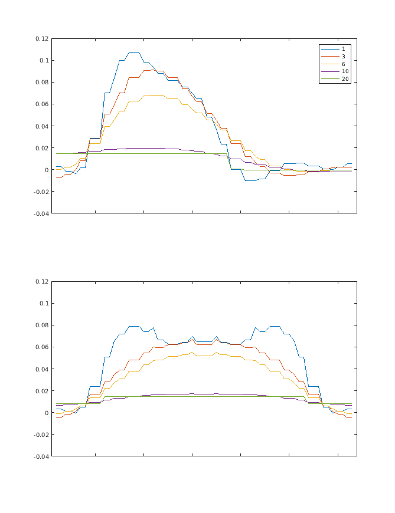
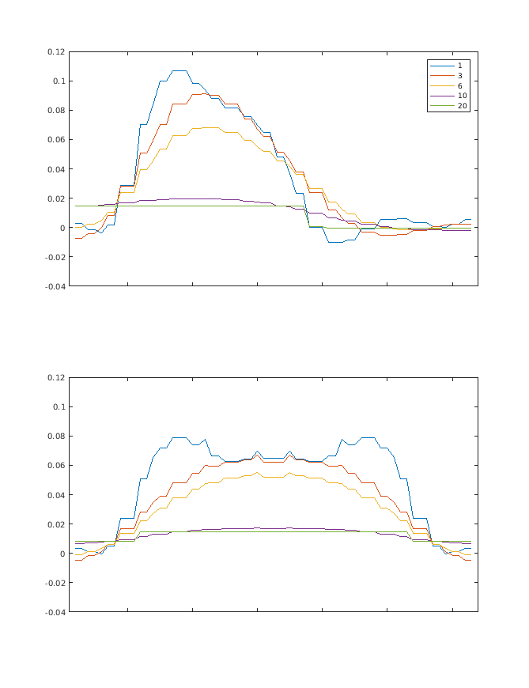

|
|
EIDORS: Electrical Impedance Tomography and Diffuse Optical Tomography Reconstruction Software |
|
EIDORS
(mirror) Main Documentation Tutorials − Image Reconst − Data Structures − Applications − FEM Modelling − GREIT − Old tutorials − Workshop Download Contrib Data GREIT Browse Docs Browse SVN News Mailing list (archive) FAQ Developer
Hosted by |
Iterative Gauss Newton reconstruction in 3DThis tutorial shows the generation of images from the paper:
% Create mesh with blocky objects $Id: total_variation01.m 3273 2012-06-30 18:00:35Z aadler $
% Simulation (forward model) 1024 elements
imdl= mk_common_model('d2c0',16);
fmdl= imdl.fwd_model;
% Identify block in centre
ctrs= interp_mesh(fmdl);
xe= ctrs(:,1); ye= ctrs(:,2);
re= sqrt(xe.^2+ye.^2);
block=(ye>0 & re<.69); % for 1024
sim_img= mk_image(fmdl,1);
v_homg= fwd_solve(sim_img);
sim_img.elem_data(block) = 1.1;
v_simu= fwd_solve(sim_img);
clf;
calc_colours('greylev',-.1); % white background
show_fem(sim_img)
print -r50 -dpng total_variation01a.png;

Figure: Pie slice shape that is to be reconstructed GN reconstruction
% Compare 2D algorithms
% $Id: total_variation02.m 4839 2015-03-30 07:44:50Z aadler $
% Create Inverse Model
inv2d= eidors_obj('inv_model', 'EIT inverse');
inv2d.reconst_type= 'difference';
inv2d.jacobian_bkgnd.value= 1;
imb= mk_common_model('c2c',16); %576 Elem model
inv2d.fwd_model= imb.fwd_model;
inv2d.fwd_model.np_fwd_solve.perm_sym= '{y}';
% Guass-Newton solvers
inv2d.solve= @eidors_default;
% NOSER prior
inv2d.hyperparameter.value = .55;
inv2d.RtR_prior= @prior_noser;
imgr= inv_solve( inv2d, v_homg, v_simu);
%Simulation image
subplot(221)
show_slices(sim_img)
subplot(223)
z=calc_slices(sim_img);
c=calc_colours(z); h=mesh(z,c);
set(h, 'CDataMapping', 'direct' );
view(173,34);
set(gca,{'XLim','YLim','ZLim','XTickLabel','YTickLabel'}, ...
{[1 64],[1 64],[0.9,1.1],[],[]})
%Reconstructed image
subplot(222)
show_slices(imgr)
subplot(224)
z=calc_slices(imgr);
c=calc_colours(z); h=mesh(z,c);
set(h, 'CDataMapping', 'direct' );
view(173,34);
set(gca,{'XLim','YLim','ZLim','XTickLabel','YTickLabel'}, ...
{[1 64],[1 64],[-0.1,0.1],[],[]})
print -r100 -dpng total_variation02a.png;

Figure: Simulation image (left) and GN reconstructed image (right) Gauss-Newton (2-norm) reconstructions are not very successful for this shape. Note: The 'sliver' of background shown on the meshes at right is a rendering bug in matlab 6.5. It does not show up in the matlab window. TV reconstructionOne technique to permit image regularization without imposing smooth- ing is the Total Variation (TV) formulation of regularization. The Total Variation functional is assuming an important role in the regularization of inverse problems belonging to many disciplines, thanks to its ability to preserve discontinuities in the reconstructed profiles. Application of non-smooth reconstruction techniques is important for medical and process imaging applications of EIT, as they involve discontinuous profiles. Qualitative and quantitative benefits can be expected in these fields.We outline the properties of the TV functional in the next section, to motivate its use as a regularization penalty term and to understand the nu- merical difficulties associated with it. The use of the TV functional leads in fact to the formulation of the inverse problem as a minimization of a non-differentiable function. Application of traditional minimization techniques (Steepest Descent Method, Newton Method) has proven to be inefficient [Dobson, Santosa, 1994][Borsic, 2002]. Recent developments in non-smooth optimization (Primal Dual-Interior Point Methods) have brought the means of dealing with the minimization problem efficiently. The performance of this algorithm with respect to traditional smooth algorithms is the subject of this paper.
% TV Solutions % $Id: total_variation03.m 3428 2012-07-02 20:56:41Z bgrychtol $
% Create TV Inverse Model
invtv= eidors_obj('inv_model', 'EIT inverse');
invtv.reconst_type= 'difference';
invtv.jacobian_bkgnd.value= 1;
invtv.hyperparameter.value = 1e-3;
invtv.solve= @inv_solve_TV_pdipm;
invtv.R_prior= @prior_TV;
invtv.parameters.term_tolerance= 1e-3;
invtv.parameters.keep_iterations= 0;
invtv.fwd_model= inv2d.fwd_model;
invtv.fwd_model = mdl_normalize(invtv.fwd_model, 1);
maxiters= [1,3,6,15];
for i= 1:length(maxiters)
invtv.parameters.max_iterations= maxiters(i);
imgtv= inv_solve( invtv, v_homg, v_simu);
imgtv.calc_colours.ref_level=0;
%Reconstructed image
subplot(2,length(maxiters),i);
show_slices(imgtv)
subplot(2,length(maxiters),i+length(maxiters));
z=calc_slices(imgtv);
c=calc_colours(z); h=mesh(z,c);
set(h, 'CDataMapping', 'direct' );
title(sprintf('TV iters=%d',maxiters(i)))
view(173,34);
set(gca,{'XLim','YLim','ZLim','XTickLabel','YTickLabel'}, ...
{[1 64],[1 64],[-0.02,0.1],[],[]})
end
print -r150 -dpng total_variation03a.png;

Figure: Total Variation reconstructions as a function of the number of iterations. From left to right iterations are: 1,3,6,8 TV reconstruction vs iterationIn order to understand how TV reconstructions improve with the iteration number, we calculate:
% TV Solutions % $Id: total_variation04.m 4839 2015-03-30 07:44:50Z aadler $
% Create TV Inverse Model
invtv= eidors_obj('inv_model', 'EIT inverse');
invtv.reconst_type= 'difference';
invtv.jacobian_bkgnd.value= 1;
invtv.hyperparameter.value = .03;
invtv.solve= @inv_solve_TV_pdipm;
invtv.R_prior= @prior_TV;
invtv.parameters.term_tolerance= 1e-3;
invtv.parameters.keep_iterations= 1;
invtv.fwd_model= inv2d.fwd_model;
invtv.parameters.max_iterations= 20;
imgtv= inv_solve( invtv, v_homg, v_simu);
clf;
show_slices(imgtv)
print -r100 -dpng total_variation04a.png;
imgs= calc_slices(imgtv);
idx = [1,3,6,10,20];
subplot(211);
plot(squeeze(imgs(:,32,[idx])));
axis([1 64 -0.04 0.12]); set(gca,'XTickLabel',[]);
legend('1','3','6','10','20');
subplot(212);
plot(squeeze(imgs(32,:,[idx])));
axis([1 64 -0.04 0.12]); set(gca,'XTickLabel',[]);
print -r75 -dpng total_variation04b.png;
 

Figure: Left Total Variation reconstructions for iterations 1 to 20 (from left to right, top to bottom) Right Slices through the conductivity distribution vs iteration number. Top vertical centre cut, Bottom horizontal centre cut, |
Last Modified: $Date: 2017-02-28 13:12:08 -0500 (Tue, 28 Feb 2017) $ by $Author: aadler $